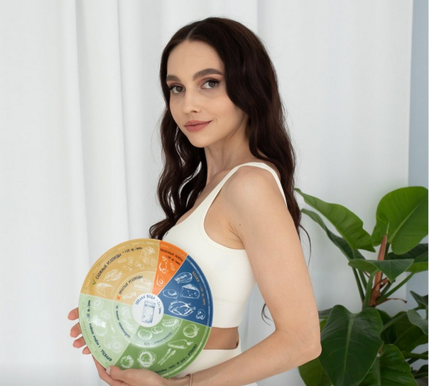

Анастасия Павлова

Обо мне
Я-врач общей практики, эндокринолог, клинический нутрициолог, детский нутрициолог
Работаю с клиентами различного профиля с превентивным подходом, предотвращая развитие заболевания, обострения, а так же помогаю войти в стойкую ремиссию при уже имеющихся хронических процессах
Моя главная цель-Ваш здоровый образ жизни, ощущение энергии, вдохновения, активности, и конечно же, индивидуальный подход, начиная с питания и заканчивая медикаментозным лечением (при необходимости). Работаю с причиной, и уже после-с ее исходом
Какие базовые вопросы можно решить при совместной работе:
- рационализация питания и образа жизни, как главных факторов здоровья
- составление рациона по индивидуальным потребностям
- снижение/набор веса
- выявление и коррекция дефицитарных состояний
- комплексное обследование организма, расшифровка результатов
- индивидуальный план по восстановлению организма с помощью коррекции рациона, образа жизни и нутрицевтической поддержки
Детские программы для детей от рождения и до 18 лет
- рационализация питания и образа жизни, как главных факторов здоровья
- составление рациона по индивидуальным потребностям
- снижение/набор веса
- выявление и коррекция дефицитарных состояний
- индивидуальный план по восстановлению организма с помощью нутрицевтической поддержки
- обучение нормализации питьевого/пищевого режима
- питание детей-спортсменов, детей-вегетарианцев
Несколько полезных советов
Чтобы пищеварение работало полноценно, добавляйте пряные специи в процессе приготовления блюд, сервируйте тарелку перед приемом пищи,как в лучших ресторанах города, ведь пищеварение начинается с «головной» фазы, и в процессе приготовления блюд,сервировки стола,наши органы зрения,обоняния и даже слуха передают сигналы в мозг, о том,что мы планируем прием пищи,и тот, в свою очередь, подготавливает к работе ферменты слюны, поджелудочной железы,активизируется работа желудка,перистальтика кишечника, что улучшает процесс переваривания пищи и обеспечивает максимальное усвоение нутриентов.
Готовьте разнообразную пищу, с палитрой красок, так как чем больше разных цветов у Вас на тарелке, тем больше витаминов и минералов Вы потребите в процессе приема пищи. Перед приемом пищи рекомендуется употреблять стакан тёплой воды(для улучшения желчеоттока), и при хорошей переносимости можно добавлять лимонную дольку, для повышения кислотности желудочного сока(обеспечиваем полноценное усвоение белка из пищи). Соблюдайте правило Тарелкии не забывайте про питьевой режим
Это интересно